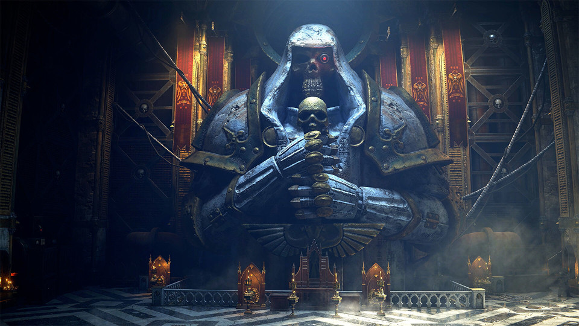
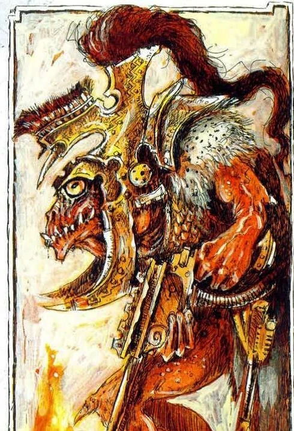
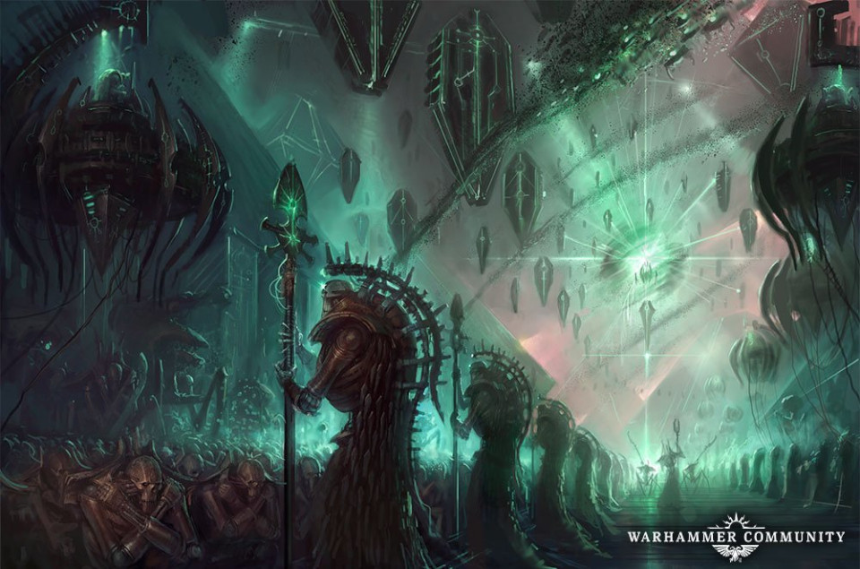
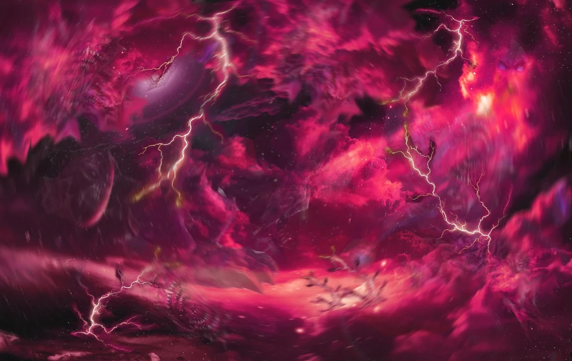
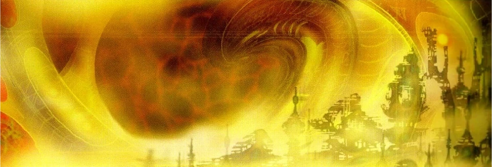

This is a website dedicated to introducing the fascinating lore found in the Warhammer 40k universe! Warhammer 40k is a tabletop wargame that is set in the grim darkness of the far future, where armies clash on countless war-torn worlds. Humanity stands alone and is surrounded by threats of the hertetic, the mutant and the alien. There is no mercy. There is no respite. Prepare yourself for battle. Warhammer40k.com
This website will look at a few of the more memorable seclect races involved in the 40k universe.
Reasons to Consume Warhammer 40k Lore:
Each race has their own unique backstory and biology.
Lore is constantly being released and cannonical.
Some of the technology being utilized is fun to think about.
An enthusiastic community that is friendly and welcoming.
Background

War in the Far Future
In order to get a better understanding on the playable races we are going to talk about it is important to briefly talk about what the universe was like before 40k and the story of how it came to be.
40k takes place in a universe much like our own with a vast scale and millions of stars and potential worlds. It is now in state where there is war on all sides and all sides are constantly under the threat of utter extinction.
It wasn't always like this though - the universe used to be fairly peaceful where life was seeded on planets and war was not the main objective of intelligent life.
Race
Playable
Imperium of Man
Yes
Orks
Yes
Old Ones
No
Eldar & Dark Eldar
Yes
C'tan
No
The Old Ones

An Old One
The Old Ones were an ancient and highly technologically and psychically advanced intelligent species of cold-blooded reptilian beings or an alliance of individual advanced species. They established an interstellar empire across the Milky Way Galaxy tens of millions of Terran years ago. Effectively there was peace in space because they were the only advanced species.
The Old Ones were the original crafters of the Webway, and creators of the Eldar and many other intelligent peoples of the galaxy such as the Slann and the Jokaero, as well as the Krork, which also makes the Old Ones the creators of the Orks.
These reptilian beings went around seeded life on all the planets in our galaxy and there was no other species near to them in technological capablities.
The C'tan
A C'tan Star God
The C'tan also known as Star Gods are said to be the oldest intelligent beings in the existence of the galaxy. They were created at the very beginning of the universe spawned from swirling gases and enormous amounts of energy. They are etheric cratures by nature.
The C'tan usualy kept to themselves and went around solo feeding on the raw energy produced from stars and did not much care for other forms of life (espeically bilogical).
However eventually there came a time when the C'tan started to fight the Old Ones. The C'tan were not a technologically evolved race of biologically living but literal star gods and thus had the potential to beat the old ones if the C'tan rallied together.
This was became known as the war in heaven and there has been no war like it in the history of the universe.
The War in Heaven

Necrons Preparing for Battle
This was a intergalatic war over 60 million years prior to today (40k). It was fought between the Necrons with their C'tan Star God allies agaisnt the Old Ones. I talk more about this war in the origin of the Necrons as it is vital to their creation story.
In order to bolster their fightting forces the Old Ones started creating new intelligent races and arming them with technology a few key races being the Aeldari, Orks, and Man.
Eventually the Necrons with their C'tan Star God allies proved victorius and the remaining Old Ones fled away from the galaxy that they spent so much time and effort in seeding and developing. Others think that the Old Ones are actually in a nearby galaxy watching the events of 40k unfold always ready to spring back into action if they don't like what they see.
The Warp

The Unstable Warp
The immaterium more commonly known as the warp is an alternate dimension of purely psychic energy that echoes and underlies the familiar four dimensions of the material universe.
The warp is the source of all psychic powers(something that is heavily used by most races in 40k) and is unstable by its very nature. The warp is also the home of demons and the Chaos Gods making it dangerous but vital place for most races of 40k.
The warp is used for FTL faster than light travel with the use of warpdrives equipped in their ships.
The warp is thought to be the final resting place of sentient souls and its existence is thought to be a direct result to sentient life in the universe - if there was no life there would be no warp.
The Webway

The Webway
The webway, also known as the Labyrinth Dimension is an extra-diminesional space partitioned off from the immaterium(the warp) millions of years ago by the Old Ones. Today it is used as a form of FTL faster than light travel for the Eldar and their Drukhari counterparts.
The webway has been described as an incrdibly complex networks of arteries and capillaries, a amze of glowing tunnels, and a mystic tapestry of hidden threads that spread across the veil between realspace and the warp.
I like to think of the webway as technologically built pathways through the warp that allows for instantaneous travel and is a much safer alternative than traveling exclusively throught the warp with a warp drive.